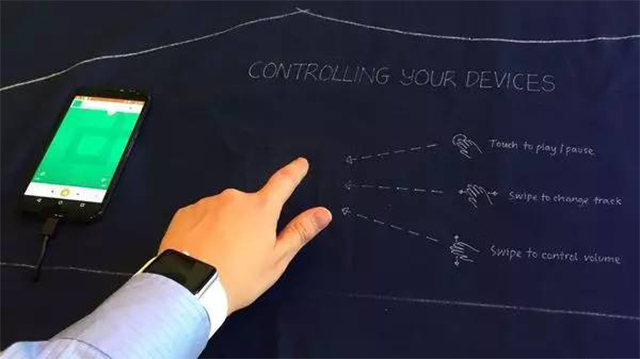
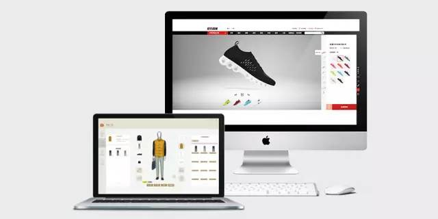

科技一直在各个方面改变人们的生活，不仅如此，与服装行业的碰撞，也迸发出无限可能的火花，它们之间的界限早已模糊，跨界的融合已成为必然趋势，“智能化”慢慢地融入到服装行业的方方面面中。
顺应科技潮流，智能化服装在多个方面崭露头角。纳米技术的应用，电子纺织品的到来，以及3D成衣技术的普及，无一不拉近服装行业与科技的距离。
人们一直在探索纺织品、服装的新属性，虽然诸如Speedo“鲨鱼皮”这样的泳衣曾经名噪一时，但它并非采用纺织物，而是聚氨酯或是氯丁橡胶，最终也被奥运机构禁止使用。显然，纳米技术是更好的解决方案。
纳米技术如何改变服装？其实很简单：在传统织物上添加纳米级涂层，赋予织物更多功能，甚至改变其属性。这意味着，衣服仍然舒适，但有可能防水或是抗皱，甚至不会变脏。目前，Nanotex等公司的纳米织物技术，已经在军事、时尚及数码设备领域获得了实际应用。
为此，2017年7月7日，国家纺织面料馆、广东省纺织工程学会在佛山西樵召开了2017功能性纺织品技术高峰论坛，通过技术发布、产品展示、品牌对接、交流互动，引荐现代化信息化载体，推动新产品、新技术快速产业化，提振纺织企业转型升级。大会邀请到服装品牌、独立设计师、纺织服装行业新产品新技术相关人员、纺织面料企业负责人等，共400多人参加，我司亦（启尚）作为主要发言人在台上做了重要讲话。
如果说纳米技术目前还仅仅提现在改变织物的基本属性，那么电子纺织品则更容易让人们体会到智能化服装的感觉。比如谷歌与李维斯合作的Project Jacquard，便是在夹克袖口上设计了一块传统纺织品夹杂金属合成棉的区域，以此来实现导电及电子设备的操控。把原本仅仅是用于遮羞、保暖的服装变成电子设备的一部分，这可能是“可穿戴设备”的终极发展方向。
无论是纳米技术还是电子纺织品都是在服装面料上改变了人类穿着的认知与体验，那么3D成衣技术便将在服装定制行业改变人类的衣品与服装购买体验。 3D成衣技术与传统的成衣展示相比有着更具天然的优势，比如启尚科技推出的ICS时尚定制系统：一方面，它基本解决了定制服装的标准化的问题；另一方面，可以避免库存囤积导致的成本增加和资源浪费等环保问题。 当然，3D成衣技术仍在发展中，并且寻求更实际的操作空间，3D成衣技术的未来更多集中在一些快时尚品牌和独立的定制工坊，帮助他们以更少的成本提供个性化定制服务，消费者层面也能减少繁杂的定制体验。
服装产业科技互联的发展的脚步未曾停滞，3D智能技术作为热门即将引导服装革命即将到来，众多上线的服装定制项目及服装企业相继开始宣布研发3D智能技术。未来，服装定制或将走向全互联网化信息时代，而在这个过渡时期， 3D成衣技术率先走向了服装成衣展示，广泛用于服装定制与生产。
查看全部资讯 >